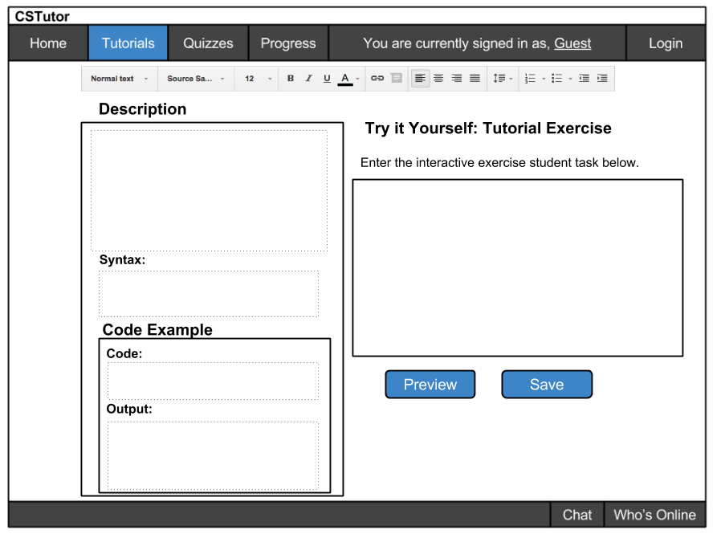
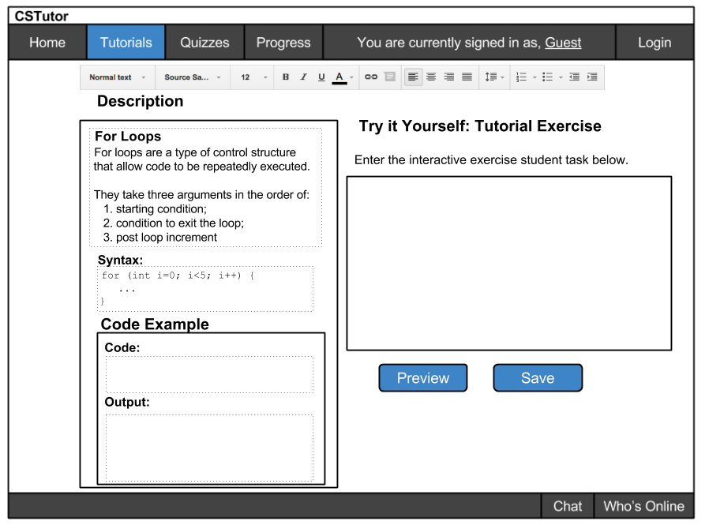
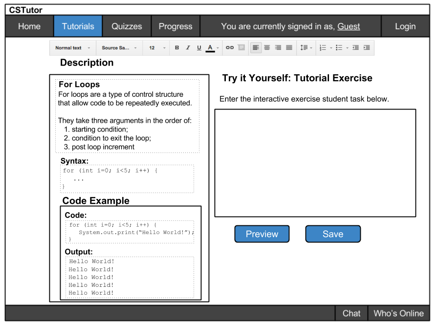
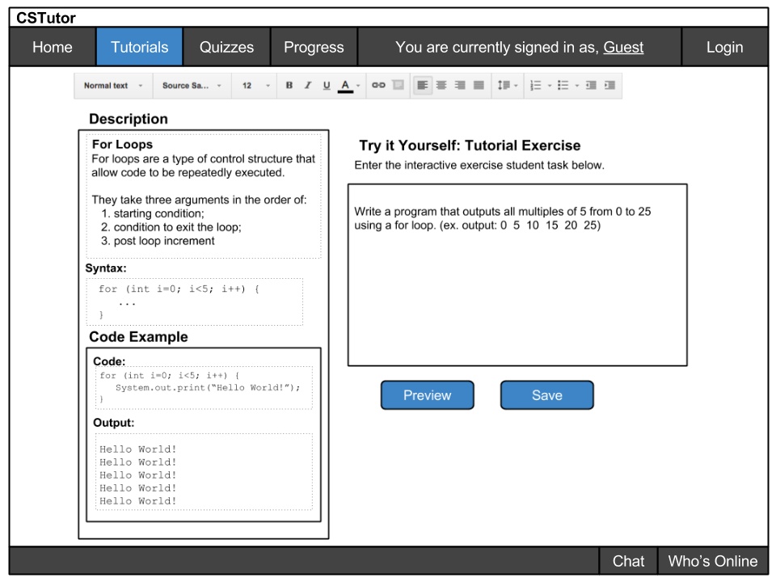

The following image depicts what the author of the tutorial initially sees upon choosing to add a new tutorial from the High Level Manager.
The Description, Code Example and Try It Yourself sections of the page are all text inputs for the author to input their material.
The Description box is intended for authors to briefly summarize the topic in general terms, allowing for a definition and syntax example. The definition tells students what the topic is for and the syntax example shows them how to use it by providing the general structure.
Furthering the description, the page includes another input for a Code Example, which shows how the topic can be used. It's meant to include an example output so the student can see what the example code produces for output.
Finally, the last type of text entry for this page is the Try It Yourself section where authors are expected to provide the prompt for a coding exercise that the students can try for themselves. Ideally, it would be a good idea for authors to also include the expected output so the students know exactly what they're trying to acheive, though this is optional.
Clicking on the "Save" button saves the newly edited/created tutorial page and adds it to the tutorial track.
The following image shows an example of a filled out tutorial editing page.
The included toolbar, as shown below, allows authors to format text in any of the text input boxes. Authors have the ability to bold phrases they would like to emphasize, choose from different headings, as well as changing the font style, which typically helps for the clarity of example code. Certain text boxes such as the Code Example, Syntax, and Output may default to a monospace font.

Clicking the "Preview" button from the tutorial editing page directs the author to an example of the page as the student would see it, shown in next section, Student interaction with a tutorial.